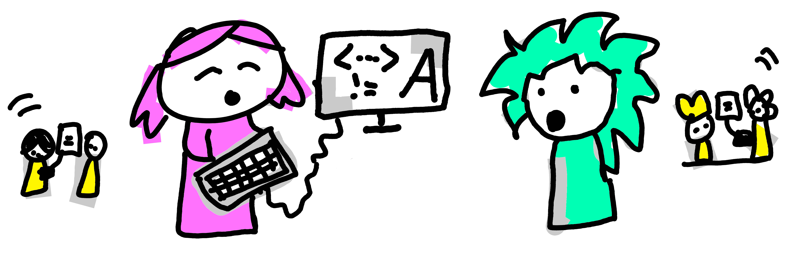
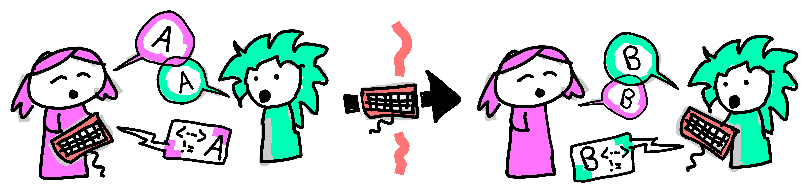
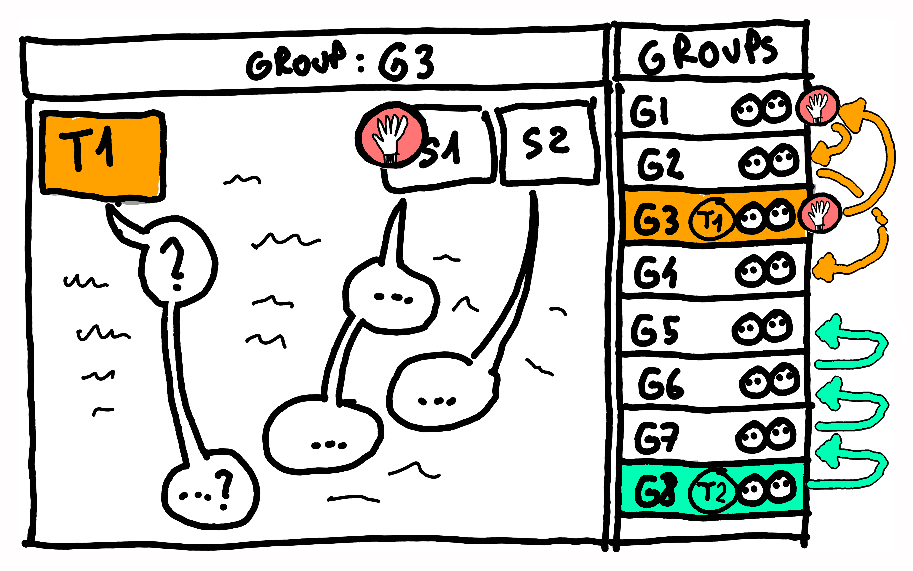

Where do I even start with Pair Programming in my classroom? Conversation with seasoned practitioners.
pair programming, groupwork
Context
In this chapter we present a conversation between three educators who have been using pair programming for many years. They will introduce the practice and answer frequently asked questions about using pair programming in education.
You can also listen to the audio podcast version of this interview. Thank you to Miłosz Karpowicz and Jan Banaś for audio editing advice and help.

Communicating the why
Let’s jump right in:
Interviewer (Kasia): Hi, we are a group of educators at the University of Edinburgh. We have been using an asymmetrical group working technique in our classrooms, called Pair programming. It’s used a lot in the industry, but not so much in education. Recently, a lot of colleagues have become interested in our experience of this, asking us questions at conferences and within our own university.
I’ve decided to interview my team who are experienced with pair programming in teaching. They will answer many of those common questions, and we hope this will benefit the educators who want to know how to start using Pair Programming in their classrooms.
Pawel: Hi, my name is Pawel and I have been teaching programming for almost a decade. I’ve always used Pair Programming in my teaching, and at times in my programming job before that. At the university I taught in Business School and Medical School, but also helped colleagues in many other departments. I love working with students on the beginning of their coding journey. They bring a lot of their own stories and thinking patterns to the table.
Brittany: Hello, my name is Brittany and I have been teaching programming and programming related topics for around 7 years in online and hybrid settings. More recently my teaching has focused on online masters courses and introductory courses. In my opinion, learning is a joyful experience and I am passionate about creating fun and joyful learning opportunities for my students, which pair programming definitely contributes to!
Kasia: Hello, my name is Kasia and I have been teaching programming for 5 years now. I also use pair programming in my courses, particularly those I teach in person. Join me over the next while as I interview my colleagues and ask them some of the questions that frequently come up when we introduce pair programming to other people.
What is Pair Programming?
Interviewer: Let’s start with the basics: What is Pair programming (or pair-groupwork in general) and how does it differ from just working in a pair?

Pawel: It’s a new way to work on practical tasks, where students work in pairs and take turns. One of them is performing the active, leading role of a Driver, and the other one is supporting and guiding them as a Navigator. They switch after every task, or every 15 minutes, so both can experience driving and navigating. That’s because there’s a lot to learn from leading and from supporting. Communication is the key here, explaining what you’re doing is a great way to learn.
Brittany: The role names come from the idea of driving a car - only one person is behind the wheel actively moving the vehicle, but the navigator in the passenger seat is crucial to making sure they reach the intended destination (“turn right here”, “take that road”). In practice when pair programming, you would work on one computer, and pass the keyboard around, so that only the driver can ‘DO’ things like click or type. This means that when pair programming, you have to fully embrace your current role.
When it’s time to switch roles you would just pass the keyboard around. Or a whiteboard marker, or whatever you are using to complete the task. So the core elements are: we take roles, we switch. But it’s not like the navigator takes a break - both roles are active and have different responsibilities, they are asymmetrical.
Pawel: And what is really interesting is that this idea did not start in academia as a way of teach or learn. It comes from Agile Software Development practices, and programmers have been using it for a while when they work. Coding involves a lot of problem solving and that’s easier to do when you can discuss it with someone. But when no-one is around, you talk to yourself, or even to an inanimate object like a rubber duck.
Interviewer: Oh, yeah, I’ve seen a lot of rubber ducks on the desks of programmers. There’s that joke that it’s good to explain your code to someone, but if there is no one around you can talk to the duck?
Brittany: Yes, they come from the same idea. I often tell my students that it is useful to talk out loud and sort through your ideas - talking is a way of thinking. In programming we have this idea of rubber-ducking - talking to an inanimate object like a rubberduck (I have a wee ghost on my desk not an actual rubber duck), my colleagues have them as laptop stickers, or keyrings. With PP your rubber duck is a human who can talk back to you! Making it even more impactful, because most rubber ducks don’t talk back! haha.
Interviewer: Ah, this sounds really interesting. And we said before that programmers in the software industry use this a lot. Has it been used in teaching? Have people found that pair programming can be beneficial in the classroom?
Pawel: It’s quite a young technique in education, it’s been gaining traction over the last decade or so. There is some recent research that using it in the classroom produces better code and more discussion between students, when comparing it to solo programming. Another team (Goel and Kathuria 2010) found that it is particularly beneficial for students with lower prior programming skills.
Brittany: We’ve been using it across our departments for about a decade, with about two thousands students in total. We’ve gathered a lot of expertise and are reaching a place where we’re starting to look more analytically into what works and what doesn’t. Especially what types of pair programming give people a better learning experience and better outcomes.
Why PP is good for learning
Interviewer: That’s right, it is all about learning better after all. So how does pair programming fit into your courses? Where does it shine and where does it not?
Brittany: One thing’s for sure: practical tasks is where working in pairs shines the most. When our students engage with a new creative task (like programming, problem solving or design) there’s so much to think about. You’re trying to work with the tools, but also keep in mind the context, and also incorporate whatever you learned recently. There is trial, and error, and exploration, and correcting your own mistakes. That’s where working in pairs, as with a driver and navigator, works best.
Pawel: Imagine you’re going on a quest, but not alone. There’s always your trustworthy sidekick, your supporting character. Always on your flank, there to catch you if you stumble. It is easier to stay brave, and keep up the stamina when you know someone will swap you in a few minutes. Tasks where support matters, they work really well.
But yeah, some things do not work too well in a pair - things like reading paragraphs of text or watching videos. Any time when you’re just passively consuming content. Maybe that’s because everyone reads at a different speed, and takes notes differently (Orzechowski and Elaine Mowat 2026). We build our whole courses around this: students ‘consume’ content individually at home before the class. And then we meet all together for the practical exercises - those happen in pairs, in the classroom.
Interviewer: That’s called a Flipped Classroom, right? Where instead of listening to the teacher together, and then practicing alone, the format is flipped. So students watch pre-recorded lecture videos alone, and then come to practice together with the teacher.
Pawel: Totally, it gets even better - you come to practice not just with the teacher but also with all your fellow students. Everyone becomes a little bit of a teacher, and a little bit of a student. It’s like we do not have a classroom of 40 students and 1 teacher… It’s more of a classroom with 41 teachers - everybody contributes! And that’s where doing practical things works well - no one in the class has a full grasp of the concept yet, but we will all figure it out together.
Interviewer: That was meant to be my next question: some students will grasp the key concepts sooner than others, or some may have had previous exposure to the course content. Would doing pair programming with a group of mixed-skill students be more difficult? What if the two students in a pair have vastly different levels of experience?
Pawel: That’s the really surprising thing, actually! It is just the opposite! Our students are here to learn, and the best way to learn something is to try to explain it to another human. When two people engage on that journey, they have to synchronise on what they believe is correct.
And yes, actual correctness is important too, you need quick ways to check if your solution works. That’s why tutors are constantly visiting each group, throughout the class, and we also write our code so that it asserts its own correctness. But the bulk of the work happens with two students immersing themselves in a challenge as a team, trying to learn the most, to teach each other the most.
Interviewer: Ok, but doesn’t this result in students working slower than they would on their own? You don’t think that’s a problem?
Brittany: We optimise for learning practical skills and being able to do it by yourself, a month later, with minimal support from notes or colleagues. But to get there, first everyone needs to build their muscle memory. And everyone is the operative word here - it’s not just about YOU learning. You are a part of a cohort, and we are optimising for everyone in the group getting as much from the course as possible.
This type of community spirit, and empathy towards your peers, is really compatible with working in pairs. Members of the pair take responsibility for each other. But yes, there is some expectation management needed - you’re not there to solve the puzzles as quickly as possible, you’re there to learn and to help others learn and benefit from the opportunity of having another person to work with, rather than learning alone.
Interviewer: Oh, right, this reminds me of this approach in medicine, where they tell the students to “see one, do one, teach one”. Young doctors would first watch a procedure being done; then they do it themselves under supervision, and then train others to do it. Only when you can guide someone else, you really understand it, right?
Pawel: Yeah, absolutely! When done well, pair programming puts you in all of those roles many times within each hour: you see, you do, and you teach. You get to see the problem from many angles, and also switch between learning in a passive, active, and reflective way. There’s nothing new in this idea, but what’s new is how quickly we get to switch and learn. You’re correct - overall the process, and the learning, is more valuable than the output.
Interviewer: Speaking of value, I totally understand why in academia we optimise for learning. But you mentioned that this practice comes from the industry. How do they justify using two people to do a job that one person could do, and potentially even faster?
Pawel: It appears to be puzzling at first, right? Counterproductive, using two people when one would do! But this false paradox comes from badly measuring what is good, what is efficient. The best writer or programmer is not the person who writes most book pages or most lines of code. Rather, the best writing fulfills its intended purpose and does it robustly. Extra points if it can be reused later for another purpose.
In creative industries, like coding, we can’t think about efficiency like we do in manual labour, it’s not like laying bricks when you build a house. A better metaphor would be that coding is like optimising a restaurant, so that food is tastier, and clients happier. It’s about working smart, not working hard. Coding is not a repetitive, replicable task like peeling potatoes or assembling cars. Coding is about quality, efficiency, and internal communication. So two people can be justified if what they create is more future-proof and better integrated.
Brittany: And because each coding challenge is slightly different, and parts are so interconnected… it makes sense for two people to work together, and constantly check each other’s work. The more something is interconnected, the more dramatic the impact of errors can be. We need code to be of super super high quality and that’s worth every minute every person spent on it.
It depends on a task, but often another pair of eyes makes the code more solid, which is worth it in the long run. Additionally, pairing up and working with people across the team means more people have a deep understanding of what we’re building, which makes for a more robust and agile team in the long run.
Students’ reactions
Interviewer: Oh wow, I see how this approach would be useful, both in education and in industry. But do students get it? Do you have to spend a lot of time convincing them?
Pawel: Yeah they get it. They say that in a successful company 30% of the budget should be spent on marketing. We sort of do the same with our teaching methods. We spend a lot of time and energy explaining to students why pair programming is a great way to learn. Pretty much like we did to you, just now. Students are here to learn, and they pick up good learning practices very quickly.
Depending on the course, sometimes the benefits take a session or two to become obvious. But it always happens in the end. The persistence of the teaching team and reiterating the ‘why’ is needed at the beginning, but once the wheel is spinning, once everyone sees the benefit, it just keeps giving. What you get quite soon is the excited buzz in the classroom as pairs code together. It’s invigorating.
Interviewer: Have you ever encountered students who didn’t want to be put in pairs, and insisted on working alone? What do you do then?
Brittany: Weirdly, this happens very rarely. Occasionally we put people in ‘pairs’ of 3… it is especially useful when someone didn’t complete the pre-reading, or is anxious, or has technical troubles. And learning something new is quite often anxiety inducing, but having a familiar structure and clear expectations can be actually useful for calming the nerves.
Being at university, or even learning in general, is a social experience, so the fact that people are all different is great! This is one of the benefits of pair programming - interacting with people from different cultures, languages, backgrounds. Differences between you and your partner are a benefit, not a problem. The programmers would say “it’s a feature, not a bug (haha)”.

Preparing for the session
Interviewer: Ok, this sounds really cool. Can we now talk a little bit about the practicalities? Walk me through how pair programming actually happens in the classroom.
How to run a PP session
Interviewer: For example, how long would your pair programming sessions be?
Brittany: In our teaching, each session is between 1 and 3 hours long. It should not be shorter than 1 hour for just coding, since students need time to ‘settle into their chair’, open the laptop, open software, say hi to their partner, etc. But it could be longer - it really depends on the number and types of tasks. It’s also quite important to suggest to students that they should take breaks, particularly if the session is 2-3 hours long - we usually just tell pairs to manage their own time and take a break somewhere in the middle.
Interviewer: And what is the ideal class size for pair programming? How many pairs and how many teachers would you usually have?
Pawel: When we teach in-person, we are often limited by the room capacity, but online the only limitation is the size of a teaching team. My Business school course had 160 students. That’s a lot, but I’ve split them into four groups things became very manageable. Each session had 40 students, me and 1 teaching assistant. It was a very good size. It was a bit taxing on the teaching team to run around for 2 hours, four times a week. But the benefits were enormous, and there were never too many hands in the air or a long queue of people waiting for help.
I would say 1 staff member can easily provide help to 10-15 pairs in person. It also really helps when the exercises we prepared for them are purpose-built for pair-programming. When students can investigate and solve their own problems, then there is much less staff support required.
Brittany: We initially thought that online would be quite different because trouble shooting takes longer and so you would need more staff, especially for beginner’s courses. But after our experiences over the pandemic and our online teaching in the Medical School I’d say that one staff member per 5-10 pairs is a good proportion in an online classroom. And sometimes we are constantly (virtually) running between breakout rooms, but there are times when we just roam, and ‘poke our head in’ to see how they’re doing. It’s really nice when students say “since you’re here, check out this cool code we’ve written!”. haha
Interviewer: And how are the sessions structured? Is there an introduction or demo at the start of the session? Or a goodbye at the end?
Brittany: It really depends what the task is, and how it is anchored in the course structure. We try to follow the flipped classroom format, where ‘talking at students’ is discouraged. And instead we try to use the precious time together to work on practical tasks, in pairs.
Some lecturers start with a mini-lecture or coding demo, where they show students in 10-20 minutes how to solve the first task or give any course updates, and then students are assigned to their pairs and start by retracing the lecturer’s steps. Same with gathering everyone for a debrief at the end - sometimes we do it, but often pairs are so immersed in their work that we do not want to interrupt them.
Pawel: And in terms of structure, once students are introduced to this format, after a few weeks, it just happens quite effortlessly. The teacher is still needed for some logistics, like creating the pairs, break-out rooms. But overall it’s sort of self-organising, like, you do not need anyone to be in charge. And that frees us, teachers, to focus on helping students. There’s a book I love about those self-organising activities which can be used in a classroom or a meeting, it’s called “Liberating Structures”, check it out.
But coming back to the pair programming, a good structure goes a long way. Forgive me a harsh example, but once I had a small bike accident on my way to work, and when I finally arrived in the classroom, what I saw stunned me. My students had already, all by themselves, split into pairs and just started working away on their tasks! It was great, I had that fantastic feeling that you get as a teacher, that I am not really needed any more! That, once they understood the process, students just came to the sessions and get on with it.
Interviewer: Ok I understand the logistics a bit better now. And you mentioned that some tasks are better than others for pair programming?
Pawel: What works best is doing practical things. Especially when the exercises are separated into a series of small-ish tasks. Like I mentioned before, working together doesn’t work too well for passively absorbing content, because we all process at different speed and or encode knowledge differently. So it is all doing small tasks, and if any reading is required, we instruct students to do it together and discuss what they’ve read.
But pair programming is really most suitable for active learning. It works when you have to together agree on a way forward, or when you together to decide the next small step that will take us there. It’s like escaping a labyrinth or solving a puzzle together. For our students this process usually involves doodling, discussion and eventually writing some code.
Interviewer: This sounds like something that would be useful when you are already quite advanced. Would it also work for beginners?
Brittany: Ha, it’s actually really great for beginners! It can be new or uncomfortable the very first time, because we’re just not used to this type of honest and transparent problem solving or vulnerability of learning with someone else. For people who are just starting to learn something, pair programming is a safe and kind way to develop their ideas, their vocabulary, and so on. They also learn how to communicate about a new topic effectively with another person. You know how we have active vocabulary, but also a passive vocabulary - words we would recognise, but would never use in a sentence.
When students switch who’s driving, they have the opportunity to work on both sides of their understanding: actively saying things, and understanding someone who says things. It challenges their misconceptions and blind spots. They say that you only understand something if you can explain it, in pair programming you constantly have to explain things. Back to that medical rule of: see one, do one, teach one.
Interviewer: We spoke about it briefly before, but what about mixed experience groups, when some people are further on their journey than others. Would they clash? Do the more novice students get intimidated, or do more senior ones get bored?
Brittany: Like we mentioned before, it really is about following the structure and switching. It can be humbling for a more experienced student to have the role of navigator and active switching enables both groups of students in different ways and it helps them in different ways. In fact, I recently got feedback from a more advanced student that they found pair programming really useful because it forced them to slow down and actually think about the code, what it is doing, and why they were making certain decisions.
But also we live in an imperfect world and it does happen that one of the partners breaks the rules. Sometimes people hog the keyboard, or talk over the other person, or dictate to the driver what to type, even if it’s not their time to type.
Pawel: You need to be on the lookout as a teacher, occasionally check on the pairs to see if everything works well. There are many small ways to create an inclusive environment, or to give students opportunities to recover their flow when something goes wrong. There’s a chapter led by Charlotte in our book, which describes those recovery mechanisms (Desvages et al. 2026).
To create an equitable world with diversity and inclusion in focus, we can’t just care for students who are ahead, maybe because they had a leg up in their previous education. Our main focus is not to just teach the best students to be better, but rather to open the opportunities that coding provides to everyone (Guest and Forbes 2024).
Interviewer: Oh, I see how pair programming could be a great practice for inclusivity, and how we have an important mission here as teachers to make sure that it is in fact inclusive.
Logistics (room, equipment)
Interviewer: I have a few more questions about the practical side of things. When doing pair programming in person, what equipment do you need? Will any classroom do? Do you need special screens, tables, chairs?
Brittany: You actually need very little equipment - one computer for each pair is enough. If we work in a computer lab, each pair uses one computer and passes the keyboard around. It also works with passing one laptop around, but laptops usually have smaller screens, and if a ‘pair’ has three students it gets a bit crowded.
In terms of the room setup, as teachers we need the ability to walk around the groups to check in on them and to help them if needed. Which is why row-by-row lecture theaters do not work so well, because you cannot work between the rows of chairs. You also need an ability for students to sit together and see what is on the screen, which tends to be difficult for those mobile chairs on wheels with little pop-up tables.
Pawel: My preference is a good, old-fashioned classroom with desks and chairs. But the technique is very flexible. We’ve seen groups of 3 students connect to classroom screens to see better. I’ve seen instructors who put students in larger groups of 5, passing the keyboard around, gathered around a big screen.
But keep in mind that not everyone can see and hear well, so to include everyone’s voice we need to have a good setup. We teach students how to adjust their computers so everyone can see well, hear each other, and be comfortable.
Interviewer: You mentioned pair programming online, so is this something that you can do in online courses? Or even in hybrid courses with some students online, and some in person?
Brittany: Over the last decade we’ve tried every possible combination. During the pandemic we had to suddenly start teaching online, including with pair programming, and it turned out to be very manageable, and in some ways even easier to run. For example, each group had its own breakout room, and the teacher could visit them with a click of a button. The students could also use the raise-hand feature to indicate they needed help. Instead of sharing a laptop, the driver would share their screen to show what they were doing.
In some way it made it easier to enact the roles, since there was no way the navigator would be tempted to touch the driver’s keyboard from across an ocean. Among other benefits there’s also the ease of switching between coding and doodling on a digital whiteboard (in-person students would doodle on pieces of paper). Overall, it was quite a manageable switch, with the student experience very similar to what we see in person. Now, years after the pandemic, we are still using pair programming in our online courses in the Edinburgh Medical School, with really good results!
Pawel: And indeed over the last few years in the Edinburgh Futures Institute we have been teaching large hybrid courses. Hybrid means that students in both modalities, some online and some in-person, pair-program together in real time. Imagine, a group of people in Edinburgh, sharing their screen and coding together with groups of people around the world. It was slightly chaotic, but also very inspiring and fun.
With my colleagues, Bea and Clare who wrote a book chapter about it (Alex, Llewellyn, and Orzechowski 2026), we run our 30 person course in programming for Social Sciences like that. With our other colleagues I’ve run a similar course with 300 students. That’s 300 people who would work in a hybrid way (some online, some in-person) with each other.
It requires a lot of prep, great knowledge of technology, and a really good team who can think on their feet. But it works! What makes it possible is the attention to small practical things like good earphones and microphones. When students can hear their partners without too much distraction in the background, all is well.
Interviewer: Wow, 300 students, half in person and half online, working together. What a thing to imagine! Amazing!
Tasks students work on
Interviewer: Ok, so it sounds like you’re using pair programming a lot, in many different modalities. Tell me about the design of materials for pair programming sessions.
Brittany: What really works is if we have a set of small programming tasks. This way students can switch who’s driving after each task. If tasks are larger, they could switch according to the clock (e.g. every 10 or 15 minutes). We try to have a few smaller warmup tasks at the beginning of the session, to give the pairs a bit of confidence. But once they’re warmed up, the tasks can get more difficult and creative.
Interviewer: So in these tasks, what sort of code are you having the students work on? Do you give them a place to start, expected results, or tests? How detailed are the instructions?
Pawel: It really depends. In general we keep written instructions to minimum, since ‘reading together’ is not the best activity to do in a pair. Then we lean on the flexibility of pair programming, adjusting it to the level and topic of the course. For example, on a beginner course you may be given some code to get you started and more structure on what to do. Often you would get a worked example, maybe with something small to tweak in it.
On more advanced courses the tasks are often really open-ended, because students know how to navigate code, and also are used to working in pairs. The challenge is to provide enough guidance so that students are not lost, but also without making it a simple paint-by-numbers with no creative thinking or agency.
Interviewer: That makes sense. So I imagine each group will go at a different speed, choosing to focus on something else, or going deeper into another thing. What if they do not finish everything in the allocated session time?
Brittany: Oh, that is absolutely fine! Usually, it is the case that many pairs do not complete all tasks, or often they choose to skip some. But we don’t let them get stressed out about it. Sample solutions are typically shared with students after the class, which can help to moderate the focus just getting a functioning answer without much thought or reflection.
Completing the tasks is not the main focus of the session, instead the real focus is on something else: to practice communicating and working with the human they are paired with. And developing a vocabulary for discussing new concepts and topics, and learning from each other. It does not matter how far they got into the materials, as long as they learn stuff really.
Creating Pairs
Interviewer: Ok, so what I’m getting here is that a lot of it hangs on the human relationship with your programming partner. How do you design the pairs? Do you do some kind of social engineering to create good combinations?
Brittany: It depends. We usually tell students who their pair will be at the beginning of the session. This makes things easier, and simplifies the chaos of ‘where should I sit’ and ‘would you like to be in a pair with me’. And when creating those pairs we optimise for people having many different partners, preferably being with a new partner every time. This is great for building community, making friends, and the cross-pollination of skills.
But also for some people with social anxiety it can introduce uncertainty or worry, so there’s always a way to tweak the pairs for those students or allow them to pick. Indeed our colleague Charlotte, from the math department, lets students pick their own partners so they can work with friends. From what Charlotte has shared, this can have a positive impact on attendance. It really depends what cohort of students you work with, and what are your constraints.
Pawel: And in terms of how exactly we come up with pairs… we use different strategies for that. Often it is just purely random, we shuffle a list of names and that decides who’s with who. And sometimes it’s quite fancy, and we can be very thoughtful about creating the most diverse pairs. Since we’re all geeks, we even wrote a website which creates perfect pairs for you!.
One way or another, since pairs are generally not repeated, we lean on the gods of randomness to just sort things out: if you had a ‘meh’ partner this week, then chances are you’ll have a better one next time. But also you can’t engineer everything and that’s ok. There’s a lot of ‘letting go’ that you need to run a class like that.
Brittany: Yeah, above everything else, the pairing strategy needs to be practical and quick, for example on courses where attendance is patchy or many people are late… we just put people into random groups as they appear. It always works out in the end.
Interviewer: What if you have an odd number of students? How do you split 13 students into pairs?
Brittany: It’s really not a problem! Often we create some pairs of 3 people, where they have two navigators and one driver. They still would use just one laptop but pass it between 3 people. This flexible definition of a ‘pair’ comes quite handy in unexpected moments: quite often we end up with ‘pairs of 3’ as a contingency plan, for example when someone is unprepared, or anxious, or takes time to warm up to the method.
Same goes for any logistical issues, like patchy internet in online classes, or someone being very late - a group of 3 is our generic solution to any trouble. Indeed, on some of my courses internet problems are so common that the groups have 3 people as default.
Pawel: But also our colleague Umberto in Psychology has been experimenting with groups of 5. Where one student is driving, and others take various other roles, like Scribe, Strategist, Researcher. In the industry this type of method is called ‘mob programming’, a little bit like with “pitchforks and torches” type of mob.
It works really well when the driver is pitching the solution to the group and they approve of it, or suggest improvements. It seems to work well, especially when well integrated into the design of the whole course. Pair programming is a very flexible way to collaborate, but it’s important to communicate the roles, the structure and the expectations to students very clearly.
Running a session
Before we start / Preparing the group
Interviewer: Right, that makes sense - the whole class should be on board and know exactly what they are doing. How do you achieve that? How do you onboard the class, especially the first few times?
Brittany: We start each course with explaining why the method works, and how to get the most out of it. Students should know what the roles are, which we sometimes illustrate with a live demonstration. It is also important that they know ‘who is who’ immediately - we tell them that the first thing to do once they find their partner is to designate the first driver. Within minutes they will switch anyway, and both will get to be the driver, so we want them to start coding as soon as they get into their pair.
Pawel: Yeah, since this method really requires students to follow the roles, the script - we ensure that only one person types, and that they only have 1 computer open in front of them. Whenever we check-up on a pair, we ask those questions, like “who’s the driver right now?” and “when was the last time you switched drivers?”. But also we make sure that if they get stuck, they know how to call for help, or get themselves unstuck (Zarb and Hughes 2015).
Interviewer: So what happens in the very moment when two students are being put together in a pair? What does the first 30 seconds look like?
Pawel: Just before sending students to their pairs we reiterate first things they should do in their pair, like a simple code of conduct. It’s all common sense: how to greet each other; how to choose who drives first; and how to create a kind and open environment for everyone. But knowing where to start makes everything much smoother.
Brittany: It’s important to remember that negotiating accessibility features is a part of that initial hello. Agreeing on things like text size and colour scheme, or whatever else is needed so that both partners can meaningfully and equally contribute.
Interviewer: I am imagining myself as I pass the keyboard to someone else. But this is my code, they will change my work, I imagine having feelings! Have you seen this sort of attachment to one’s work in your students?
Brittany: Ha, that’s a good one. What we’ve seen is people writing simpler code because they no longer write it for just themselves. What you write as the driver, has to be understood and ‘accepted’ by the navigator. The navigator needs to fully understand it, because in a minute they will continue from where you left off. A simple example is that if you use meaningful names for things, there is less confusion about what you meant, which also means less bugs in your code.
Pawel: It’s quite eyeopening and creates a lot of moments of pride! You stop accepting quick, shoddy code… or just thinking “oh, I’ll fix this later”. Instead we switch to long-term, kind thinking like “I need to write this code clearly and simply enough, so when we switch drivers, the next person can continue without much drama”.
Once pairs are at work / Roles of instructors and students
Interviewer: And once the pairs are at work, what do the instructors do?

Brittany: We roam around the room and help the pairs. As a teaching team we take on two roles, really: being the facilitators and being the teachers. As facilitators we keep checking if students are doing the pair programming right: are they switching drivers, are they using just one computer, and such.
But really most of our time is spent being the teachers: checking if they are doing OK with the tasks, if they need any help getting unblocked or unstuck. Whenever someone raises their hand, we go and help them. And then once they are unstuck, we resume roaming. Usually in each class we would check in on each pair quite a few times.
Interviewer: So, as an instructor, when do you give help and how? Do you give your students the answers, or hints, or just ask leading questions? How stuck is too stuck? Do you ever just give them a leg up so they can start the next task?
Pawel: Totally, there’s a subtle art of being a good tutor: knowing how and when to help. Not too early, but also not too later. Since the goal of class is to learn, not to just plow through the tasks, there’s little value in just giving students the answer. It is ok to let students struggle a bit, because then they forge new ways to think.
But if it takes too long and is missing context, it can become frustration which is not good.It’s sort of like lifting weights at the gym, you need some perseverance and effort, for things to stay in your head. We guide students and unblock them, usually just enough so that they can find the answer themselves. But we do help students a lot and in many ways, since not all struggles are good struggles.
As a tutor you tune into each individual situation and ask ‘are we approaching a learning moment here, or are we just lost’. There are times when it’s more beneficial to just unblock the pair, so they can move on to the next task. Especially when more learning waits for them over there.
Brittany: Getting unstuck or unblocked often includes asking students to explain what they have tried already and why they think it did not work. We also often switch to a whiteboard or a piece of paper to “doodle ourselves out of trouble”. We try to use drawings to identify the solution first, and agree between partners what it could be. And only then they try to type the code which represents that doodled solution. At its core, solving problems is what we teach. Typing code is just the final step of that process.
Interviewer: So there is a lot of teacher skill there, but also a lot of students’ self-regulation. For example, when should they decide that they are ‘stuck enough’ to ask for help? Do you teach students how they should approach problems?
Pawel: We do. Indeed, that’s at the core of pair programming. Students try to solve the problem first with their partner before they ask the teacher for help. In primary schools kids are taught to escalate problems with this mnemonic “brain, book, buddy, boss”. Your brain is your first point of call when you face a problem. Then your books and your buddies. Only once those failed you would approach the teacher.
When a tutor approaches a pair who asked for help, the first thing they would ask is “what did you try already?”. That’s important because solving things yourself creates learning opportunities. What’s valuable here is that Brain, Book and Buddy is not a passive experience of asking or trying to remember something. We encourage students to actively experiment. In the context of programming, it means creating little code experiments, small ‘sandbox’ solutions, to tease out the answer. It is often faster than googling.
Brittany: Exactly! Running code and seeing what happens is the best way to go. I often tell my students “You won’t break your computer, you might break the code but we can fix it”. Let me give you a geeky example: two students are wondering what happens if you add two words to each other, like “pen” and “apple”. Would Python just glue them making a “penapple” (all one word) or would it do what a human would and put a space in between them making a “pen apple” (as 2 words). Or maybe it will freak out and error! Students could spend 3 minutes or more googling for the solution, but they might also take 10 seconds writing a one line of code which adds “pen” and “apple” to each other, and just see what happens.
Pawel: Those tiny experiments are the very essence of what programming is.
Brittany: Indeed! Creating them does much more than just give you the answer - the process teaches you how to investigate problems, and how to understand the topics deeply. It’s practicing the skill of problem decomposition - there’s a saying that “there are no difficult problems in programming”. If it seems difficult, you just need to decompose it into smaller and smaller problems, until they are simple to solve. (haha) and yes, it’s that decomposition that is the real programming skill. And this is what students learn in pair programming.
Pawel: And coming back to the logistics of asking for help, students who need it would just raise their hand. Some classes use the Software Carpentries model where students can stick a red or green post-it note to their screen, so teachers know how they are doing, and if they need help.
In big classes, like our EFI course with 300 students, our Teaching Assistants would act as the avant garde - they go to help students first. And if the problem is very challenging, then they escalate it further and call over the Lecturer. Really it is just more of that “brain book buddy boss” philosophy. To learn problem solving, as a whole class we need to practice problem solving.
End of the session
Interviewer: I see. So the focus in a pair programming session is to get more practical experience. And how do the sessions end? Is there a structure similar to how you start the session?
Brittany: Sometimes, the time runs out and we all just go home. But it is also nice to have a moment at the end of the class where the pairs come back together to debrief. People share how it went and what they learned. It usually turns out that there were common issues and themes - it’s good to feel this community vibe at the end (haha).
But quite often pairs are so deep into their work that they do not want to come back to debrief with the class. Students go “just 5 more minutes, we’re doing so well!”. And that’s a great sign! Having too much fun in the classroom is never a bad thing.
Interviewer: Speaking of ending the pair programming sessions, I think we’ll need to wrap up our chat soon as well. We’ve discussed a lot of fascinating stuff. I am intrigued and now I want to try Pair Programming in my own teaching. What’s your one piece of advice for people like me, who want to try it in their classroom?
Brittany: I’d say: find a way to experience it by yourself. Since Pair Programming is such an experiential, immersive thing to do, you will really get the point of it once you have done it yourself. When you have had to drive, and navigate, and pass the keyboard to someone. Experience it to understand it.
All you’ll need to start is: a willing colleague or friend; two hours of time; and a simple programming task (maybe a challenge from Tidy Tuesday, or Advent of Code). You could even come to one of our taster sessions which we run at conferences and such, where we pair you up with another participant, we give you something to do and let you Pair Program! You can find instructions on how to run such a workshop by yourself on our website.
Pawel: And my biggest suggestion is, once you’ve tried it, go full steam ahead, without half-measures. It might be tempting to ‘simplify’ the method and remove some parts of it, but you might end up throwing out the “baby with the bathwater”.
For example if you do not have clear roles (who’s the driver, and who’s the navigator) it might fall into chaos or into working separately. If you do not switch, the person with more confidence or experience can end up hogging the keyboard. Or if you create bigger groups, people might disengage and not take ownership of the exercise. I’d say, start with the simple ‘vanilla’ off-the-shelf pair programming, and then find what works best in your context.
Interviewer: This sounds like very useful advice and first steps! And if people want to know more, they can find out about it on the website of our community1! Thanks for talking to me today. I am Dr Kasia Banas, and I’ve been talking today with Dr Brittany Blankinship and Dr Pawel Orzechowski from the Edinburgh Medical School at the University of Edinburgh.
Brittany: Thanks for having us!
Pawel: Thank you!
<pairprogramming.ed.ac.uk>↩︎